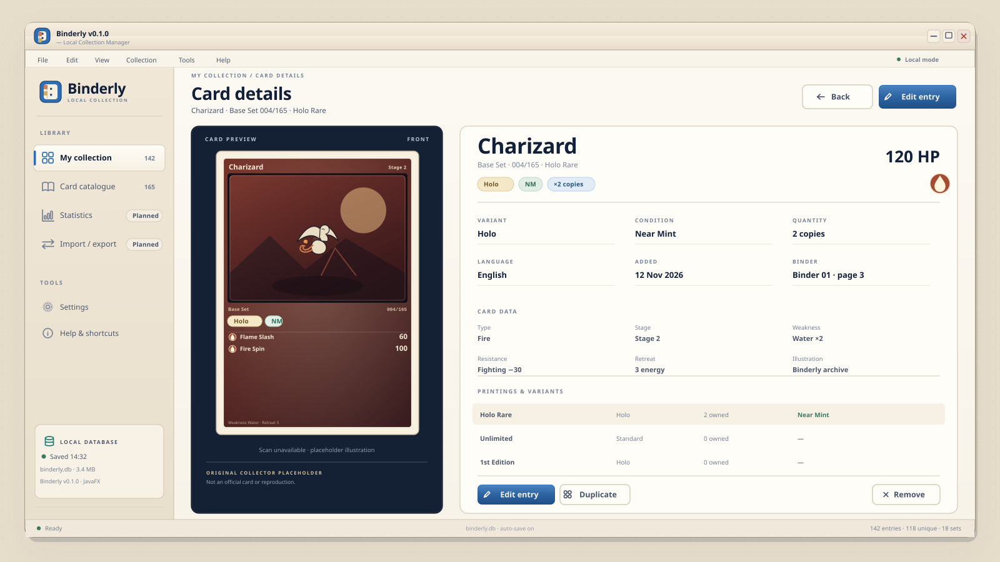
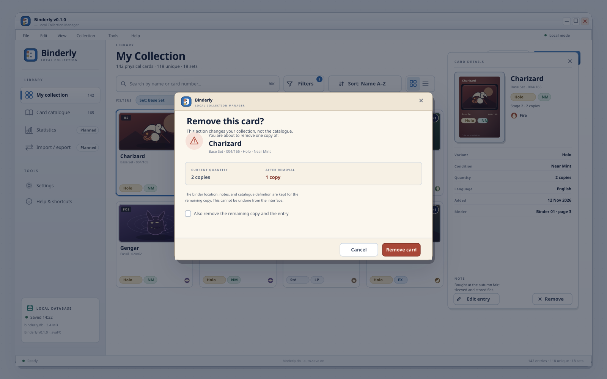
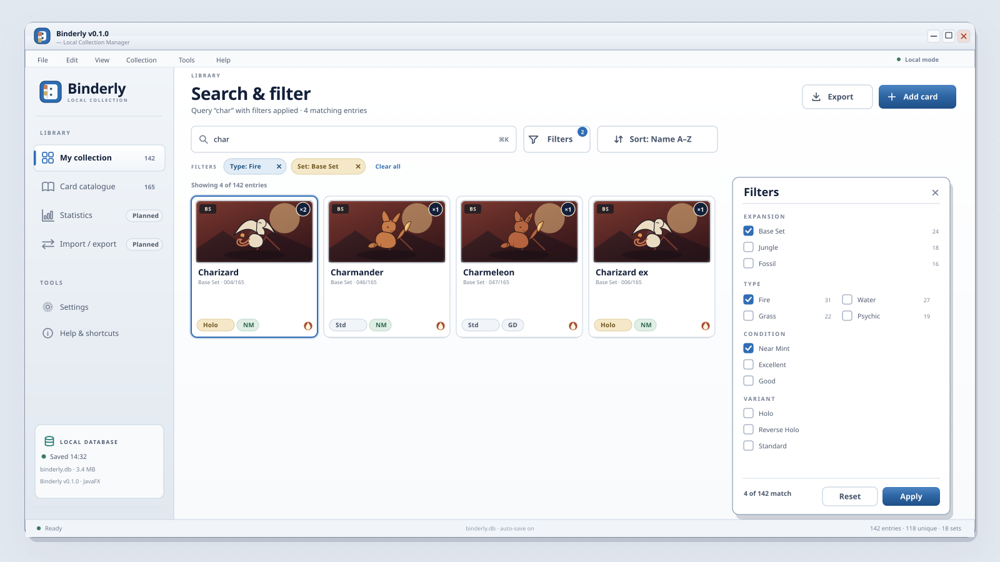
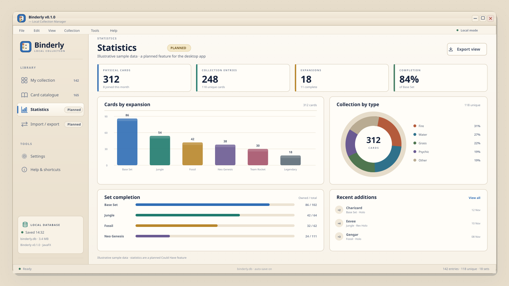
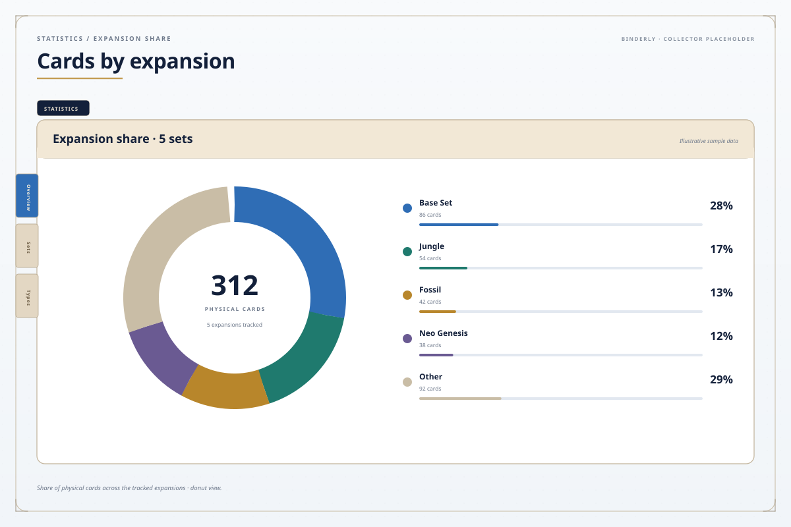
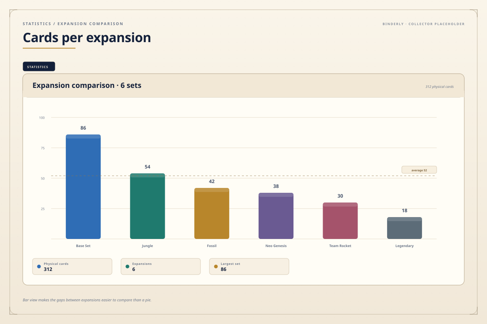
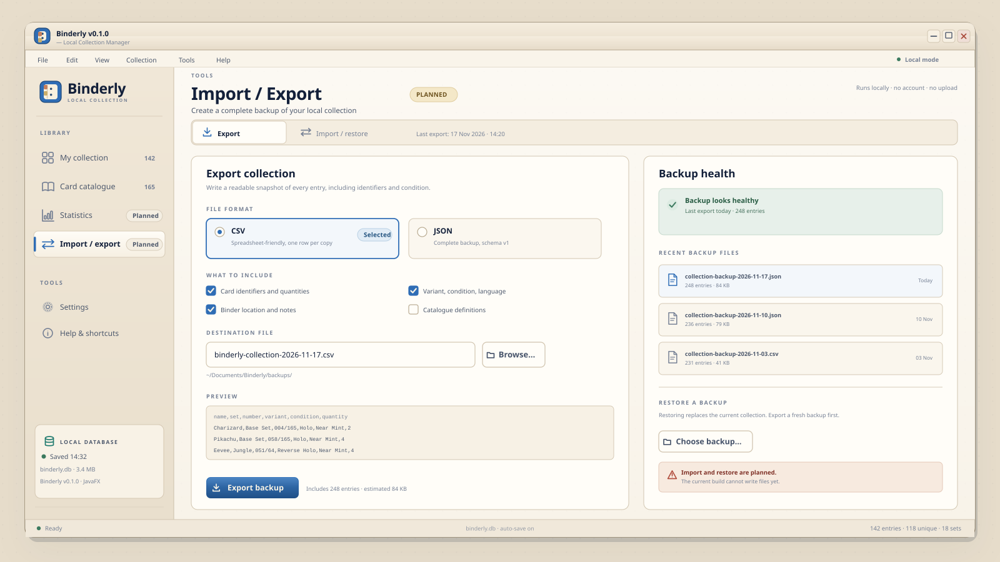
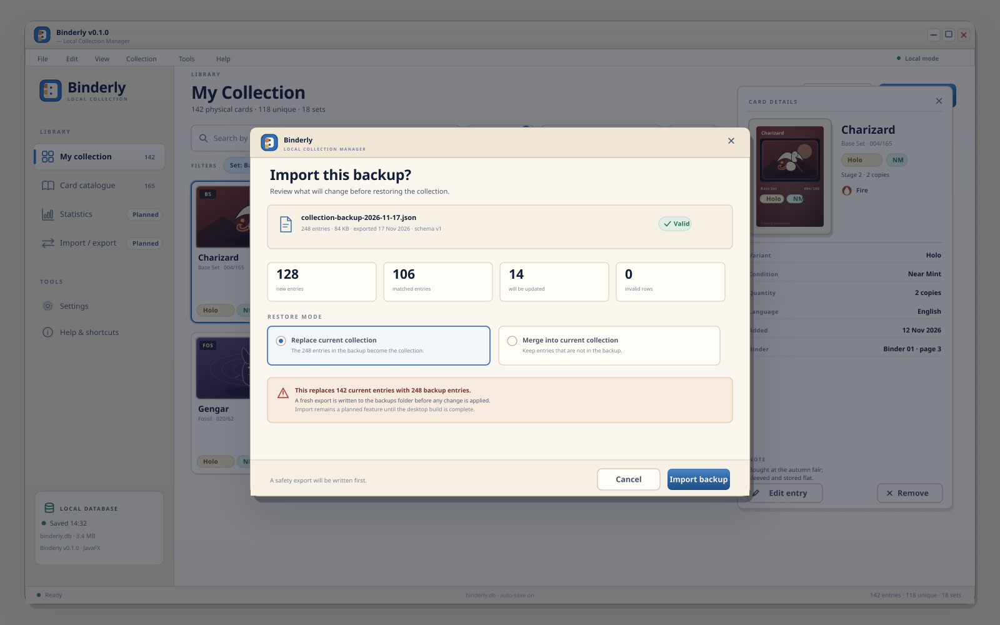

Name
The card's printed name.
Charizard
A look at the collection, catalogue, card details, editing, search, and the features that are still planned.
Screens on this page are labelled placeholders. The first public release has not been published yet.
Digital collection management is the centre of Binderly. Every physical card you own gets an entry, so the record in the app matches the cards in the binder — including the details that make one copy different from another.
Collection entry · specimen
An entry is the six answers you would otherwise keep in your head, written in the order you would read a binder pocket.
“Charizard, holo, near mint — two of them.”

The name printed on the card, so you can recognise and search for it later.
Charizard
The release the card was printed in. Two cards with the same name can come from different sets, and the expansion is what keeps them apart.
Base Set
The collector number printed on the card. Useful when a set contains several similar prints of the same Pokémon.
004/102
The specific print you own, such as a holo or reverse holo version, recorded separately from other prints of the same card.
Holo
The physical state of your copy. A well-loved card and a fresh pull should never hide behind the same number.
Near Mint
How many identical copies you have in this variant and condition.
×2
Duplicate rule
A Near Mint holo and a Played reverse holo are separate entries. Two identical copies share one entry with a quantity of two, rather than appearing as duplicates.
Collectors use these two words interchangeably, and that is where the confusion starts. In Binderly they are separate on purpose: the catalogue describes what exists, while the collection records what you have.
Card catalogue Describes
It lists cards that exist: name, expansion, number, category, and the details that belong to that print. You can browse it without owning a single card.

Two prints of the same Pokémon stay distinct here. Neither one says you own it.
Your collection Records
It lists the physical cards you own, with the variant, condition, and quantity of each one. Adding a card changes this side only.
Collection entry
Searching your collection returns only copies like this one.
The catalogue can describe a card you do not own. This side cannot.
| Question | Card catalogue | Your collection |
|---|---|---|
| What it lists | Card definitions: name, expansion, number, category, and the details that apply to that card. | Your physical copies, with their variant, condition, and quantity. |
| Who changes it | It is the reference list of cards that exist, not your personal shelf. | You do, every time you add, edit, or remove a copy. |
| What it answers | “What is this card, and which print is it?” | “Do I own it, and in what shape?” |
| When you add a card | Nothing changes — the definition was already there. | A new entry appears with its own variant, condition, and quantity. |
Planned A card the catalogue does not contain. Adding a manual entry is planned for a later release. It is not part of the current build, so this page does not promise it yet.
Card details are where the catalogue and your collection meet. The panel explains what the card is, while the entry around it remembers which copy you own.

Binderly is designed to show the details that belong to the card, rather than forcing every card into the same shape. A Trainer card has no HP or evolution stage, so those fields read as a deliberate not-applicable answer rather than a gap in the data.
When the catalogue holds no verified value, the field is shown as unavailable instead of being filled with a guess.
The card's printed name.
Charizard
The set the card belongs to.
Base Set
The collector number for that print.
004/102
Pokémon, Trainer, or Energy. The first clue about which other fields apply.
Pokémon
For Pokémon cards, the energy type printed on the card — Fire, Water, Psychic, and so on.
Fire
For Pokémon cards that sit in an evolution line, the stage the card represents.
Stage 2
For Pokémon cards, the hit points printed on the card.
120 HP
For Pokémon cards, the Energy that must be discarded to retreat.
3 Energy
Planned Card artwork stored locally. Keeping card images on your own machine is planned for a later release; it is not part of the current build.
Collections change. A card gets upgraded, a duplicate arrives, a trade takes something out. Binderly is planned to handle those edits without making you rebuild the entry around them.


Pick the card in the catalogue, choose the variant you own, record the condition, and enter the quantity. If a matching entry already exists, the quantity goes up instead of a duplicate appearing.
Change the variant, condition, or quantity when the real card changes. A binder page gets reorganised, a sleeve is replaced, a second copy turns up. The entry stays where it is; only the detail you corrected changes.
Deletion asks for confirmation before an entry is removed, so a misplaced click cannot quietly erase a record you spent months building.
Condition Variant Quantity

Two different actions
If you gave one of three copies to a friend, edit the quantity to two. If the card left your collection entirely, remove the entry and confirm. Keeping those two actions separate is what makes the numbers worth trusting.
As a collection grows, scrolling stops working. Search, sorting, and filtering are three different ways to cut the same list down to the cards you mean.

Search narrows by identity. Filters narrow by attributes.
Search
Type a full or partial card name, or a card number. Try “Pikachu” or 004/102 to jump straight to an entry. Useful when you remember the Pokémon but not the set.
How searching worksSort
Reorder the current view by name, expansion, card number, HP, condition, quantity, and more. Choose Set number or Name · A–Z and the same cards appear in an order that suits the question.
How sorting worksFilter
Narrow by expansion, type, evolution stage, condition, or variant. Two filters together — Fire and Near Mint — can turn a broad question into a precise answer.
How filtering worksA list tells you what you have. A chart tells you what kind of collection it is: small and focused, spread across many expansions, or heavy on one set you keep coming back to.
Illustrative sample The figures below show the shape of a collection, not a real one.

The statistics screen is shown here with a summary dashboard and two example charts. The numbers in a placeholder are illustrative: they show the layout, not a real collection.
Statistics are marked planned in the project plan. They are not in the current downloadable build, and the first public release has not been published. Treat these screens as a preview of the design, not a promise of a shipped feature.


Local saving is the quiet feature that makes every other one useful. Without it, a collection manager is just a form you fill in again tomorrow.
The honest limit
It keeps your collection between normal sessions on the same device. It does not protect against a lost laptop, a damaged drive, or a new computer.
Exporting a backup file is planned for a later release and is not part of the current build.
Changing computers should not mean starting over. Export turns a collection into a file you keep; import is the way back. Both are planned, and this page describes the intended behaviour rather than a shipped feature.
Write the current collection to a file you choose. Keep that file where you keep anything else you would hate to lose.
The point of a backup is that it lives somewhere other than the only copy, on a drive or account you trust.
Replace the current collection from that file, after a clear confirmation. It should be a serious action, not a quiet merge in the background.


Import and export are not part of the current build. Until they arrive, local saving is the only persistence the app is planned to provide.